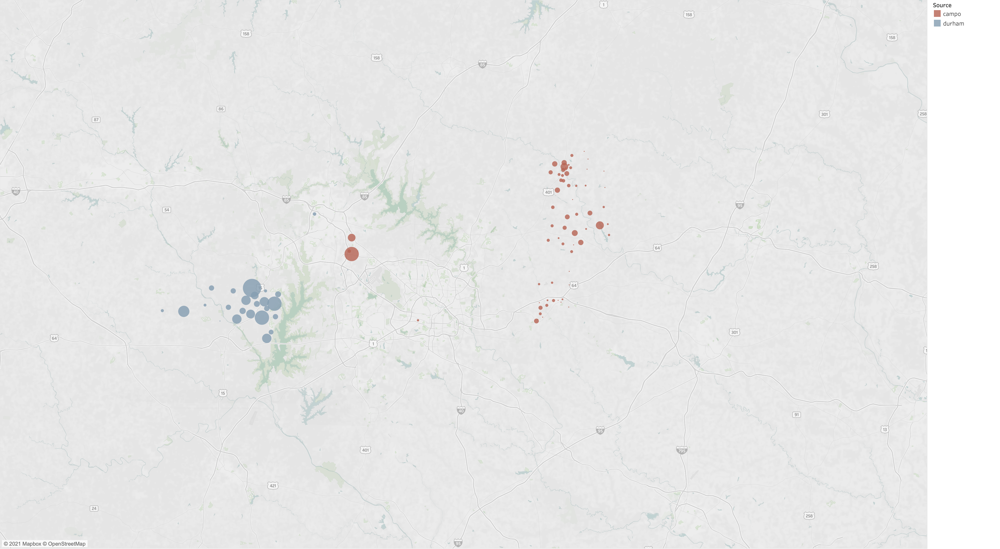
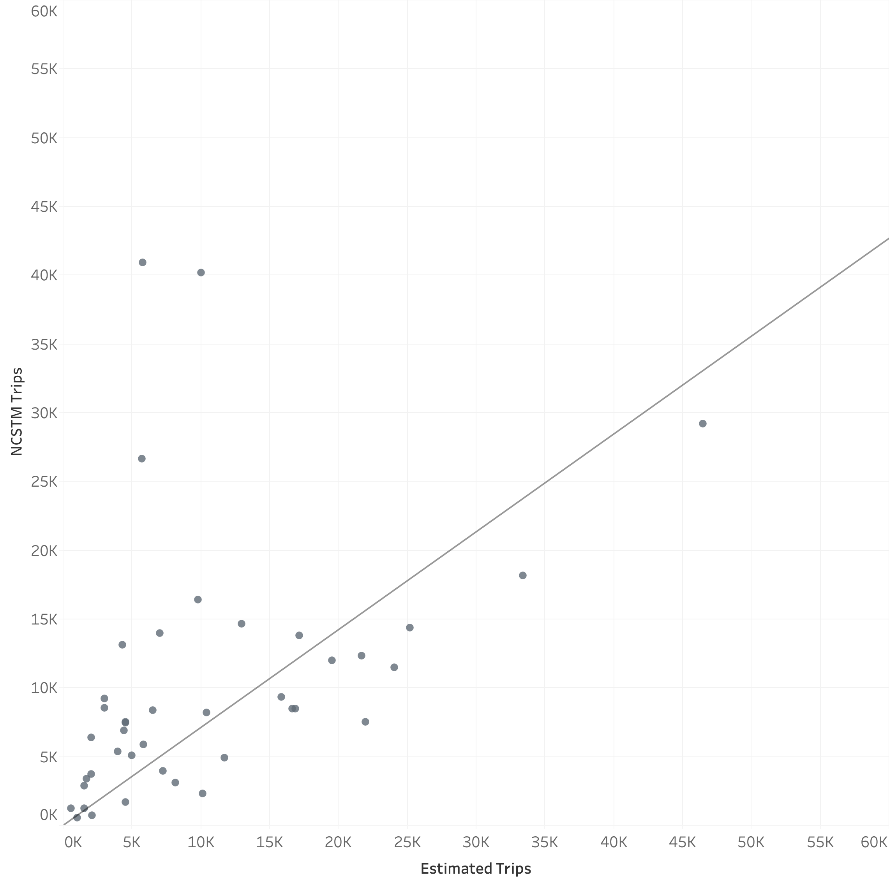
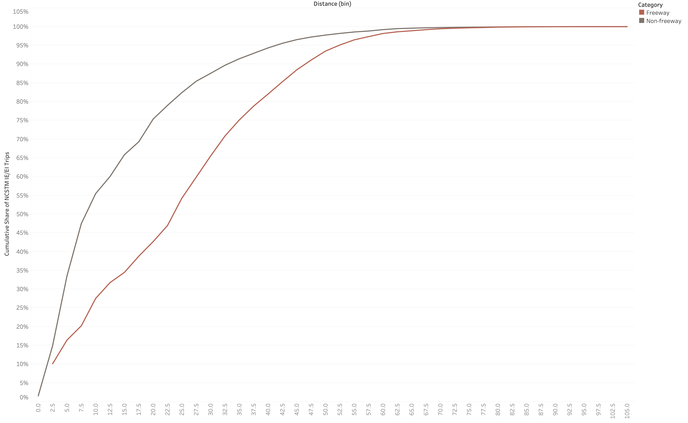
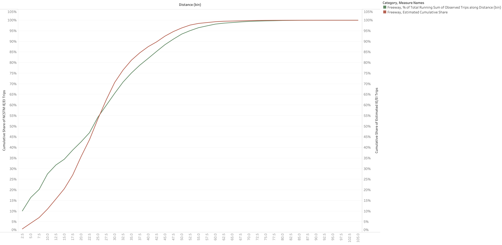

Internal/External
Introduction
Travel from outside the Triangle model’s geographic boundary to locations inside the boundary are referred to as “external-internal” or “EI” trips. Movements from inside the boundary to outside are “internal-external” or “EI” trips. Movements through but not stopping within the region are referred to as “external-external” or “EE” trips. Together, these travel patterns are referred to here as “EE” and “IE/EI” travel. This document discusses the development of these components of the regional model.
Available Data Sources
The two best available data sources for external-related travel are (i) StreetLight Data provided by the client, and (ii) a sub-area extraction from the North Carolina Statewide Travel Model (NCSTM v.4.3a). The analysis suggests that the NCSTM data is superior because there appears to be an error with either the StreetLight Data or its extraction. The map below shows “attractions” for the IE/EI trips from StreetLight. The “E” end of the trip is asserted to be the production end and the “I” end of the trip is the attraction end. Finally, the data was aggregated to a 21-district geographies defined by ITRE. The red dots show data extracted using the CAMPO zone system and the blue dots show data extracted using the DCHC MPO zone system. The map shows an illogical outcome of attractions clustered in select locations near the external stations. Nearly all the DCHC trip ends were in Chatham County while CAMPO trip ends were predominantly in Franklin County.
StreetLight Attractions

EE
The first step is to determine the share of traffic at each external station that can be attributed to EE travel. This allows the balance of trips to be attributed to IE and EI travel. The NCSTM data contains flow estimates for each of the model’s 97 external stations. These flows are used to estimate the share of travel using the AWDT estimates derived from the NCSTM. In addition, the share of commercial vehicles are segmented by single-unit trucks and multi-unit trucks. The table below summarizes these outcomes.
EE Time of Day
The data available was not adequate to calculate time of day shares for the EE trips. Instead, the commercial vehicle factors were used. Through trips do not follow the same dual-peak pattern as commuters and occur more often during the midday in general.
IE/EI
The number of IE/EI trips are controlled by the volumes at the external station after external travel has been subtracted. These trips are distributed using a gravity model. For this model form, attractions and gamma parameters must be estimated.
IE/EI Attraction Model Estimation
The NCSTM data was aggregated to the 43-district system to support model estimation. A handful of specifications were tested to determine a useful attraction model, including segmenting the attraction models for freeway and non-freeway external stations. These more complicated models generated coefficients with wrong signs. The final, simple model generated positive coefficients on the population and employment variables. It does not segment the stations by roadway type and asserts a Y-intercept of zero.
| Variable | Estimate | t-statistic | p value |
|---|---|---|---|
| Employment | 0.0045 | 0.0492 | 0.9610 |
| Population | 0.1559 | 2.8185 | 0.0075 |
| Adjusted R-squared | 0.5008 | NA | NA |
A scatter plot of the NCSTM and estimated attractions by the 43-district system is shown in the plot below.
NCSTM and Estimated IE/EI Attractions

Distance Assessment
The chart below plots the trip length frequency, with the trip length measured from the external station to the internal zone segmenting trips that enter the region at freeways from those at other locations. The plot shows a logical and expected outcome: trips entering the region at freeway external stations travel longer distances than those entering at non-freeway locations.
IE/EI Trip Length Frequency

The above chart suggests the IE/EI distribution model should be segmented by freeway and non-freeway stations. The estimated gravity parameters are shown below.
| Type | a | b |
|---|---|---|
| Freeway | 5 | 0.25 |
| NonFreeway | 5 | 0.60 |
The model estimated distances for freeways and non-freeways are plotted against the observed data in the two following figures.
IE/EI Observed and Estimated Trip Length Frequency for Freeway Stations

IE/EI Observed and Estimated Trip Length Frequency for Non-Freeway Stations

A table summarizing the mean trip lengths is presented below.
IE/EI Average Trip Lengths
| Category | Source | Mean Distance (miles) |
|---|---|---|
| Freeway | Estimated | 21.6 |
| Freeway | Observed | 26.0 |
| Non-freeway | Estimated | 14.5 |
| Non-freeway | Observed | 15.9 |
Final adjustments
During validation, The IE/EI model was enhanced to allow additional control of trip lengths. This is due to the existence of some town along the border. Stations near those towns need even shorter trip lengths. Two additional sets of gravity parameters were created and the terminology was changed as shown below.
| Type | a | b |
|---|---|---|
| Long | 5 | 0.25 |
| Medium | 5 | 0.60 |
| Sort | 5 | 1.30 |
| Very Short | 5 | 1.60 |
The first two options (“Long” and “Medium”) are the same coefficients as estimated. The final two coefficients were arrived at through iterative trials during highway validation.
IE/EI Time of Day
The data available was not adequate to calculate time of day shares for the IE/EI trips. Instead, the factors were borrowed from N_HB_OD_Long (similar to HBO in other models). Compared to using work trips, this shifts demand from the AM and PM periods into the off peak. These travelers (e.g. with long commutes to work) need to leave earlier in the day. They cross the model boundary earlier (and later) than the peaks for internal residents.
| Period | Factor |
|---|---|
| AM | 0.154 |
| MD | 0.152 |
| PM | 0.301 |
| NT | 0.393 |
TransCAD GIS Software, 2022